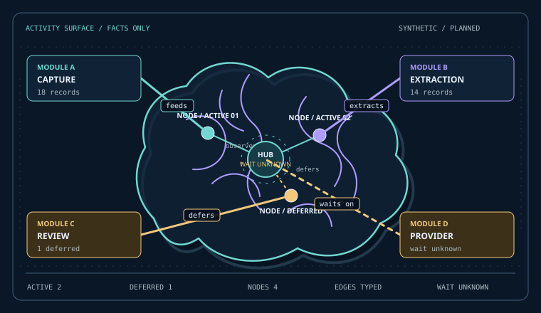
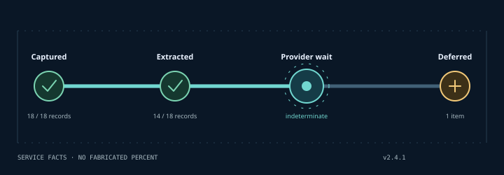

Atlas retry · provider wait
Timeout at 09:42:18 UTC; selected resource and scope preserved.
Waitingsource revision retained
Understand what was retained, why, and what changed
OBSERVATORY / PULSE · SYNTHETIC / PLANNED
Pulse projects actual bounded facts from the service. Status words, units, and indeterminate waits remain separate from confidence or completion.
Durable links remain addressable after reload or reconnect.
Timeout at 09:42:18 UTC; selected resource and scope preserved.
One captured item is deferred. No denominator supplied for provider response.
ACTIVITY SURFACE · BOUNDED FACTS
Modules, nodes, typed edges, and connector hubs stay inside one bounded local surface. Facts come from this synthetic fixture only.

14 extracted, 2 active, 1 deferred. Provider wait remains indeterminate.
List alternative to the graphic:
| Fact | Value | State |
|---|---|---|
| Captured records | 18 | Known |
| Extracted records | 14 | Known |
| Active observations | 2 | Known |
| Provider response | — | Indeterminate |
Known denominators only. Waiting never becomes a percentage.

| Stage | Units | State | Updated |
|---|---|---|---|
| Captured | 18 / 18 | Completed | 09:40 |
| Extracted | 14 / 18 | Known | 09:41 |
| Provider response | no denominator | Waiting | 09:42 |
| Deferred review | 1 item | Deferred | 09:42 |
No record, revision, or scope changed. Retry uses the pinned Threadloom MCP context.
Each async region has local language and a recoverable next step.
Keep selected scope and previous facts visible until response.
Zero open work is distinct from unknown activity coverage.
Show units supplied by service, never a made-up completion rate.
Heartbeat or text says waiting; no denominator or percent.
Name four records outside extraction and preserve continuation/reason when provided.
Local retry preserves focus, resource, scope, and revision.